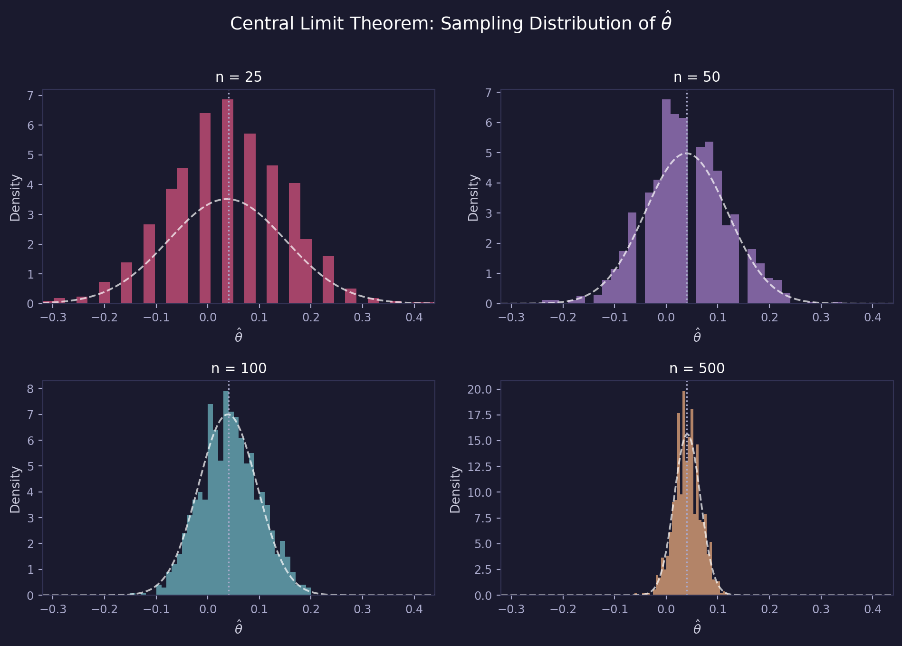

Simulating Key Ideas from Classical Frequentist Statistics
statistics
simulation
python
Author
Alina Markova
Published
April 15, 2026
Introduction
My website has a landing page where visitors can sign up for a newsletter. A natural question is: does the wording of the sign-up prompt actually matter? To find out, I tested two versions of the call to action (CTA):
CTA A: “Sign up for our newsletter here!”
CTA B: “Stay up to date by signing up!”
To evaluate which performs better, I ran an A/B test — visitors are randomly assigned to see one of the two CTAs, and I compare sign-up rates between the two groups. Random assignment is the key: it ensures that any difference in sign-up rates is attributable to the CTA language itself, not to some other difference between the groups.
The A/B Test as a Statistical Problem
Each visitor either signs up or doesn’t — a binary outcome. We model each visitor’s outcome as a draw from a Bernoulli distribution with parameter \(\pi\), the probability of signing up. Since CTA language may influence that probability, we allow it to differ across groups:
Visitors who see CTA A have sign-up probability \(\pi_A\)
Visitors who see CTA B have sign-up probability \(\pi_B\)
The quantity we care about is the true difference in sign-up rates:
\[\theta = \pi_A - \pi_B\]
We estimate this with the difference in sample proportions:
\[\hat{\theta} = \bar{X}_A - \bar{X}_B\]
Since each observation is 0 or 1, the sample mean is simply the fraction of visitors who signed up — so \(\bar{X}_A = \hat{\pi}_A\) and \(\bar{X}_B = \hat{\pi}_B\).
Simulating Data
In a real experiment, \(\pi_A\) and \(\pi_B\) are unknown. But for this exercise, we set them ourselves so we can study how our estimator behaves when we know the truth. Suppose \(\pi_A = 0.22\) and \(\pi_B = 0.18\), making the true difference \(\theta = 0.04\) — CTA A is slightly better.
The Law of Large Numbers (LLN) tells us that as sample size grows, the sample mean converges to the population mean. This is what gives us confidence that \(\hat{\theta} = \bar{X}_A - \bar{X}_B\) will be close to the true \(\theta\) when the sample is large enough — it’s not just luck, it’s a theorem.
To see this in action, I compute the element-wise differences between the CTA A and CTA B draws, then plot the running (cumulative) average of those differences as sample size grows.
With only a handful of observations, the running average is noisy and swings around. But as sample size grows, it settles toward the true difference of 0.04. This is the LLN at work: enough data and the estimate will get there.
Bootstrap Standard Errors
A point estimate alone isn’t enough — we also want to know how precise it is. The bootstrap is a resampling method that estimates variability without requiring a closed-form formula. The idea: repeatedly resample (with replacement) from observed data, recompute the statistic each time, and use the standard deviation of those resampled statistics as the estimated standard error.
The two standard errors are nearly identical — reassuring confirmation that the bootstrap is working correctly. The 95% confidence interval runs from roughly 0.005 to 0.079. Since it excludes zero, it suggests CTA A likely outperforms CTA B, though the effect is small.
The Central Limit Theorem
The Central Limit Theorem (CLT) states that regardless of the underlying population distribution, the sampling distribution of the sample mean becomes approximately Normal as sample size grows. This applies to our estimator \(\hat{\theta} = \bar{X}_A - \bar{X}_B\) as well.
To visualize this, I simulate 1,000 values of \(\hat{\theta}\) at each of four sample sizes — \(n \in \{25, 50, 100, 500\}\) — and plot histograms.

At \(n = 25\), the histogram is rough and slightly lopsided. By \(n = 100\), it’s clearly bell-shaped, and by \(n = 500\) it’s nearly indistinguishable from a Normal curve (shown as the dashed overlay). The dotted vertical line marks the true \(\theta = 0.04\). This is the CLT in action: the shape of the underlying Bernoulli distribution stops mattering as the sample grows.
Hypothesis Testing
Now that we know \(\hat{\theta}\) is approximately Normal for large samples, we can use this to run a formal hypothesis test.
We set up:
\(H_0: \theta = 0\) — the two CTAs produce the same sign-up rate
\(H_1: \theta \neq 0\) — they differ
Under \(H_0\), the CLT tells us \(\hat{\theta}\) is approximately \(N(0, SE(\hat{\theta})^2)\). Standardizing gives us the test statistic:
\[z = \frac{\hat{\theta} - 0}{SE(\hat{\theta})}\]
By the CLT, \(z \overset{\cdot}{\sim} N(0,1)\) under \(H_0\) — so we know the distribution of our test statistic under the null, which is exactly what we need to compute a p-value.
A note on “t-test” vs. z-test: This setup is sometimes called a t-test, but that’s a loose use of the term. A classical t-test assumes Normal data and exact t-distributed test statistics. Our data are Bernoulli, not Normal, so there’s no exact t-distribution result here. The CLT gives us approximate Normality, and since we’re estimating the SE from data, what we’re really running is closer to a z-test. For large samples, the t and Normal distributions are nearly identical — so the distinction has little practical consequence, but it’s worth understanding why.
With a p-value of roughly 0.023 — below the conventional \(\alpha = 0.05\) threshold — we reject \(H_0\). The data provide statistically significant evidence that the two CTAs differ in sign-up rate, with CTA A performing better.
The T-Test as a Regression
The two-sample test above is mathematically equivalent to a simple linear regression. This is a useful connection because the regression framework generalizes naturally to more complex designs — adding control variables, interactions, or multiple treatment arms — while producing the same inference in the simple case.
We stack the data into a single dataset with outcome \(Y_i\) (1 = signed up, 0 = didn’t) and treatment indicator \(D_i\) (1 = saw CTA A, 0 = saw CTA B), then fit:
\[Y_i = \beta_0 + \beta_1 D_i + \varepsilon_i\]
The coefficient \(\beta_0\) is the mean of the B group (\(\hat{\pi}_B\)), and \(\beta_0 + \beta_1\) is the mean of the A group (\(\hat{\pi}_A\)). So \(\beta_1 = \pi_A - \pi_B = \theta\) — the OLS estimate \(\hat{\beta}_1\) is numerically identical to \(\hat{\theta}\).
The estimate on \(D\) matches \(\hat{\theta}\) from the two-sample test (up to a small difference because standard OLS uses a pooled variance estimate). The p-value and t-statistic are essentially the same. Once you understand this equivalence, the path to more complex experiments — stratified designs, covariate adjustment, multiple arms — runs directly through regression.
The Problem with Peeking
Suppose your boss is impatient. Rather than waiting for all 1,000 visitors per group, she wants to check the results after every 100 visitors and stop early if a test comes back significant at \(\alpha = 0.05\).
This is a problem. A single test at \(\alpha = 0.05\) has a 5% false positive rate — 5% chance of rejecting \(H_0\) when it’s actually true. But each additional peek is another opportunity to get a false positive. Running 10 tests on accumulating data inflates the overall false positive rate well above 5%.
To quantify this, I simulate a world where the null is actually true (\(\pi_A = \pi_B = 0.20\), so \(\theta = 0\)), and measure how often the peeking strategy incorrectly rejects \(H_0\).
from scipy.stats import normdef run_peeking_experiment(pi_A=0.20, pi_B=0.20, n_max=1000, step=100): draws_A = np.random.binomial(1, pi_A, n_max) draws_B = np.random.binomial(1, pi_B, n_max)for n inrange(step, n_max +1, step): xA, xB = draws_A[:n].mean(), draws_B[:n].mean() se = np.sqrt(xA*(1-xA)/n + xB*(1-xB)/n)if se ==0:continue z = (xA - xB) / se p =2* (1- norm.cdf(abs(z)))if p <0.05:returnTrue# At least one false positivereturnFalsenp.random.seed(0)n_experiments =10_000false_positives =sum(run_peeking_experiment() for _ inrange(n_experiments))fpr_peeking = false_positives / n_experimentsprint(f"False positive rate (peeking): {fpr_peeking:.3f}")print(f"Nominal rate (single test): 0.050")
The empirical false positive rate under peeking is roughly 18–22% — several times the nominal 5%. Every early look is another roll of the dice. In practice, this means A/B tests with peeking will regularly declare winners that don’t actually exist. The fix is to either pre-commit to a single test at a fixed sample size, use sequential testing methods designed for early stopping (like alpha-spending functions), or apply a Bonferroni correction across the planned number of peeks.